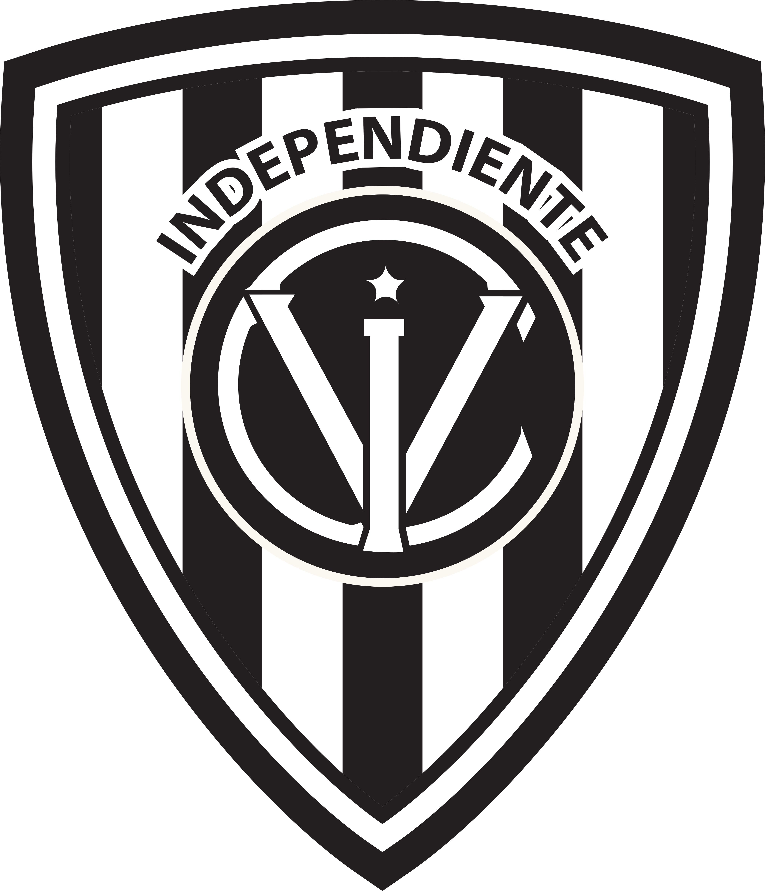
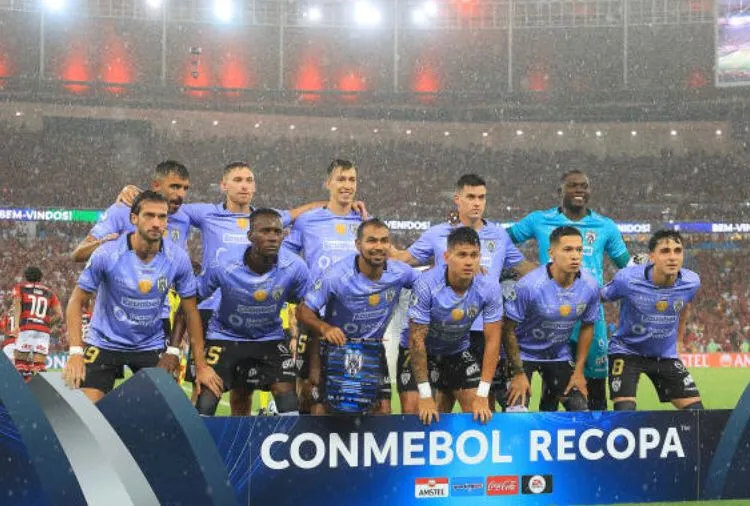
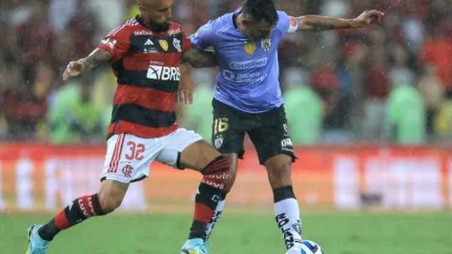

Champion of The Recopa Sudamericana in 2023
Independiente del Valle is the champion of the Recopa Sudamericana. The Ecuadorian team surprised Flamengo at the Maracana, winning 5-4 on penalties, after losing 1-0 in regulation time The contest faced the winner of the Copa Libertadores 2022, Flamengo, with the champion of the Copa Sudamericana of that year, Independiente del Valle.
In the first leg, the victory had been in the hands of Independiente del Valle 1-0, thanks to a goal by Mateo Carabajal, at minute 24 of the second half. The Ecuadorians played the last stages of that match with 10 men, due to the expulsion of Julio Ortiz.

In the second leg, Flamengo could not breach the goal defended by Wellington Ramírez until the last moment, where a goal by Uruguayan Georgian De Arrascaeta (minute 95) forced extra time and eventually penalties.

In the definition, Ramírez took revenge against De Arrascaeta in the first penalty and from there, no one else failed. Faravelli, Hoyos, Previtali, Schunke and Landázuri converted to ensure the triumph of Independiente del Valle.